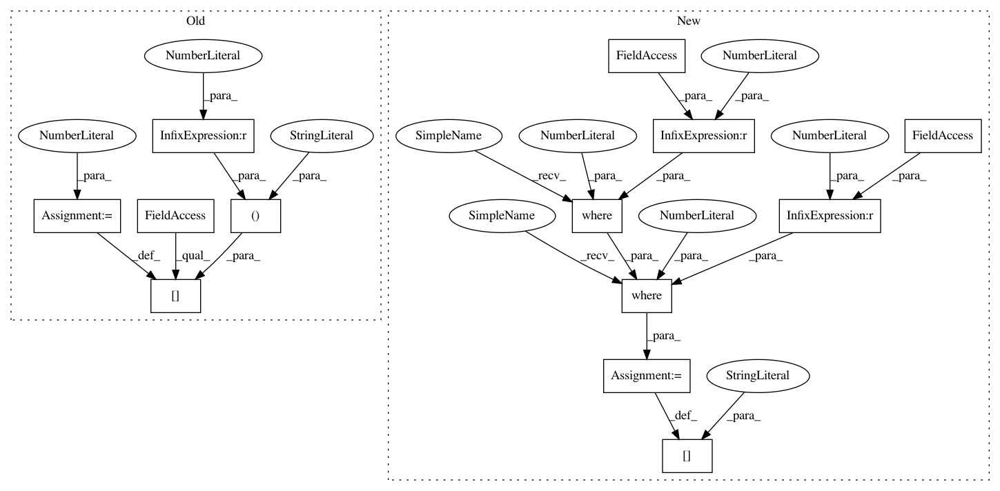

9337cca8b6f43bd7f780c980b4ca6f044bc8774d,QUANTAXIS/QAAnalysis/QAAnalysis_signal.py,,ma30_cross_func,#Any#,422
Before Change
MA30_CROSS_SX_Integral = Timeline_Integral_with_cross_before(MA30_CROSS_SX)
MA30_CROSS = pd.DataFrame(columns=["MA30_CROSS", "MA30_CROSS_JX", "MA30_CROSS_SX", "MA30_TP_CROSS_JX", "MA30_TP_CROSS_SX"], index=data.index)
MA30_CROSS.loc[MA30_CROSS_JX == 1, "MA30_CROSS"] = 1
MA30_CROSS.loc[MA30_CROSS_SX == 1, "MA30_CROSS"] = -1
MA30_CROSS["MA30_CROSS_JX"] = Timeline_Integral_with_cross_before(MA30_CROSS_JX)
MA30_CROSS["MA30_CROSS_SX"] = Timeline_Integral_with_cross_before(MA30_CROSS_SX)
After Change
MA30_CROSS = MA30_CROSS.assign(MA30=MA30)
MA30_CROSS["MA30_CROSS_JX"] = CROSS(MA5, MA30)
MA30_CROSS["MA30_CROSS_SX"] = CROSS(MA30, MA5)
MA30_CROSS["MA30_CROSS"] = np.where(MA30_CROSS["MA30_CROSS_JX"].values == 1, 1, np.where(MA30_CROSS["MA30_CROSS_SX"].values == 1, -1, 0))
MA30_CROSS["MA30_CROSS_JX"] = Timeline_Integral_with_cross_before(MA30_CROSS["MA30_CROSS_JX"])
MA30_CROSS["MA30_CROSS_SX"] = Timeline_Integral_with_cross_before(MA30_CROSS["MA30_CROSS_SX"])
// MA30 前29个是 NaN，处理会抛出 Warning，使用 [29:] 则不会计算 NaN，相应的 return_index+29
In pattern: SUPERPATTERN
Frequency: 3
Non-data size: 13
Instances
Project Name: QUANTAXIS/QUANTAXIS
Commit Name: 9337cca8b6f43bd7f780c980b4ca6f044bc8774d
Time: 2020-03-14
Author: 11652964@qq.com
File Name: QUANTAXIS/QAAnalysis/QAAnalysis_signal.py
Class Name:
Method Name: ma30_cross_func
Project Name: QUANTAXIS/QUANTAXIS
Commit Name: 9337cca8b6f43bd7f780c980b4ca6f044bc8774d
Time: 2020-03-14
Author: 11652964@qq.com
File Name: QUANTAXIS/QAAnalysis/QAAnalysis_signal.py
Class Name:
Method Name: boll_cross_func
Project Name: QUANTAXIS/QUANTAXIS
Commit Name: 9337cca8b6f43bd7f780c980b4ca6f044bc8774d
Time: 2020-03-14
Author: 11652964@qq.com
File Name: QUANTAXIS/QAAnalysis/QAAnalysis_signal.py
Class Name:
Method Name: ma30_cross_func
Project Name: QUANTAXIS/QUANTAXIS
Commit Name: 9337cca8b6f43bd7f780c980b4ca6f044bc8774d
Time: 2020-03-14
Author: 11652964@qq.com
File Name: QUANTAXIS/QAAnalysis/QAAnalysis_signal.py
Class Name:
Method Name: maxfactor_cross_func